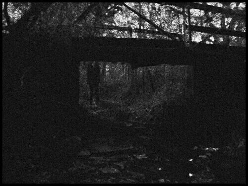
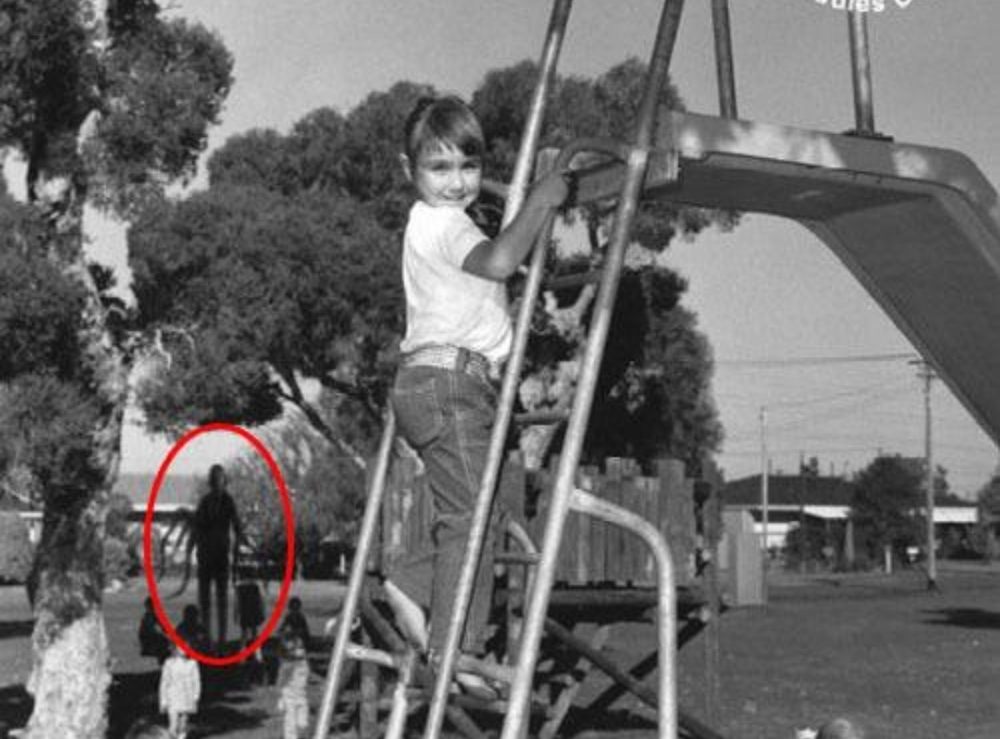

Материалы о неизвестном существе. 2009 год — настоящее время.

Фигура, замеченная на одном из ранних снимков.
Первые упоминания о существе, впоследствии получившем название Слендермен, относятся к июню 2009 года. Именно тогда на одном из интернет-форумов появились две чёрно-белые фотографии, на которых среди группы детей была замечена необычная человеческая фигура.
Публикация принадлежала пользователю под псевдонимом Victor Surge. Позднее стало известно, что за ним стоял Эрик Кнудсен. Фотографии были созданы в рамках конкурса на форуме Something Awful.
Согласно одному из описаний, снимок был связан с исчезновением четырнадцати детей в окрестностях библиотеки Стирлинг. Утверждалось, что фотография была сделана незадолго до происшествия, а находившаяся на заднем плане фигура неоднократно появлялась в рассказах очевидцев.

Фотография из первоначальной публикации. Дата: июнь 2009 года.
На другом изображении можно было заметить ту же высокую фигуру, стоявшую позади детей. Её руки казались непропорционально длинными, а тёмная одежда почти сливалась с окружающим фоном.
Отдельное описание относилось к фотографии, датированной 1983 годом. Сообщалось, что она оказалась одной из немногих уцелевших после пожара в библиотеке. В качестве фотографа указывалась Мэри Томас, исчезнувшая 13 июня 1986 года.
После появления этих изображений стали возникать новые сообщения о похожей фигуре. Её описывали как очень высокого, худощавого человека с бледной кожей, длинными конечностями и совершенно гладким лицом.
Поначалу неизвестного замечали преимущественно в лесах. Его силуэт появлялся между деревьями, возле старых построек или на опушках, где он мог оставаться неподвижным на протяжении длительного времени.
Особенно часто с его появлением связывали исчезновения детей и подростков. В рассказах упоминалось, что незадолго до пропажи человек начинал видеть странные сны, замечать высокую фигуру вдалеке и испытывать необъяснимое беспокойство.
Необычные явления также связывали с работой фотоаппаратов и видеокамер. При попытке зафиксировать фигуру изображение могло покрываться помехами, терять чёткость или полностью искажаться.
Постепенно вокруг первоначальных сообщений возникло множество дополнительных историй. В них появлялись новые свидетели, фотографии и описания похожих происшествий.
Ни одна из сохранившихся версий не давала ответа на главный вопрос: что именно происходит с людьми после того, как они исчезают?